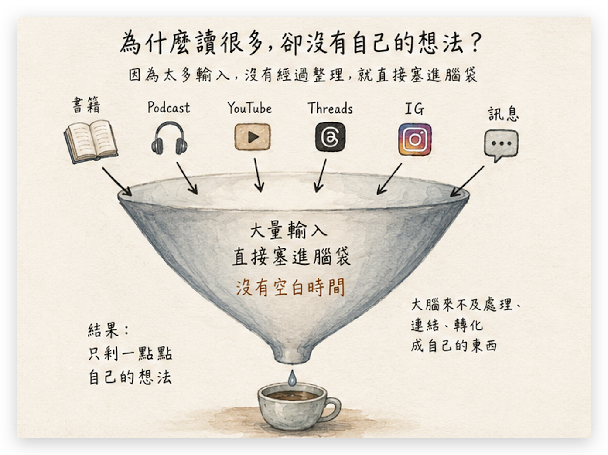
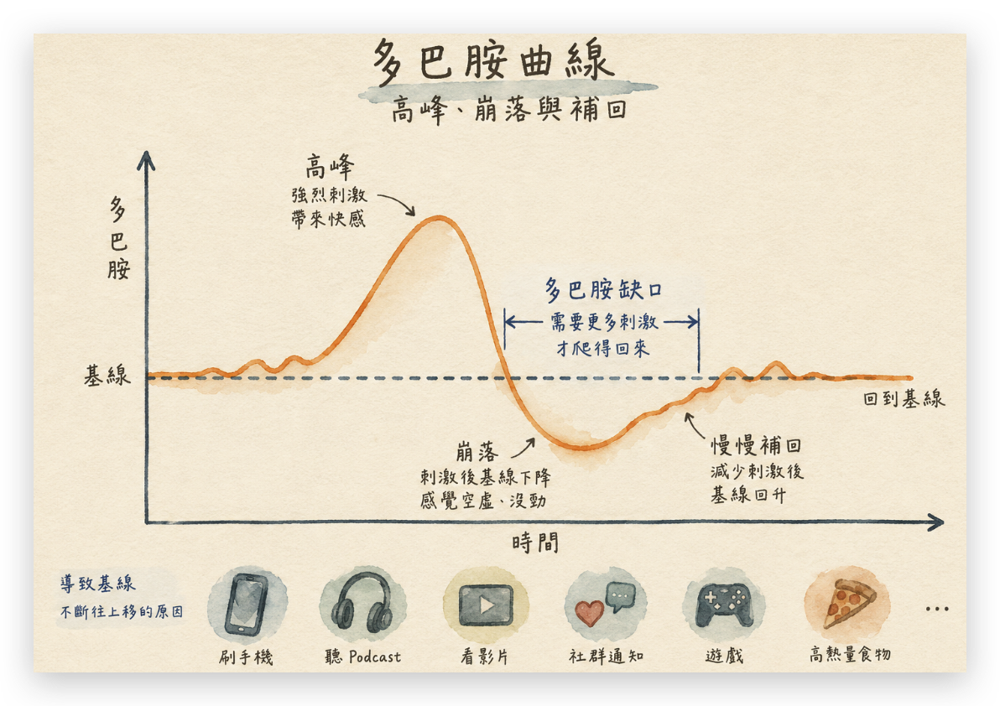
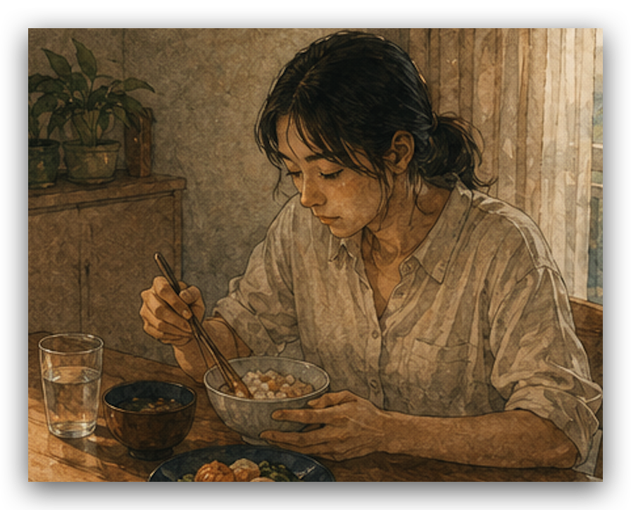
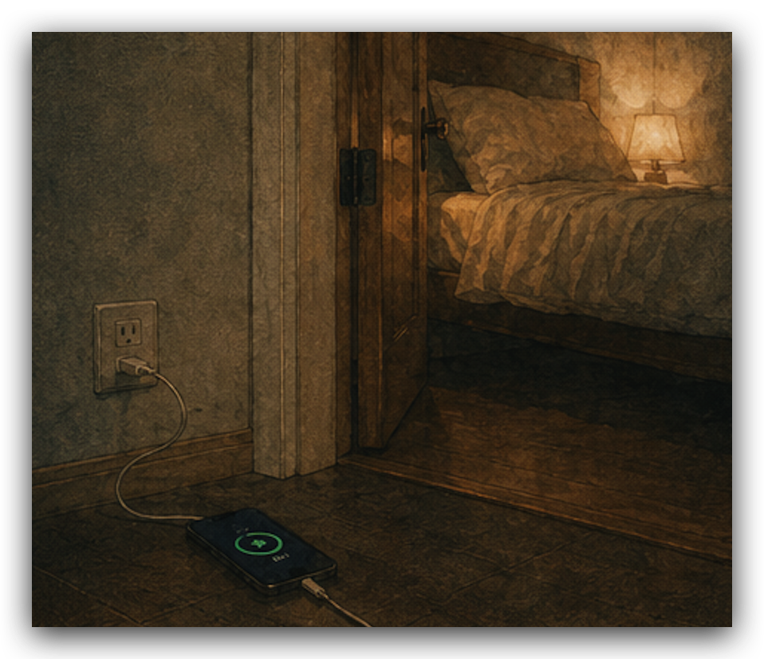
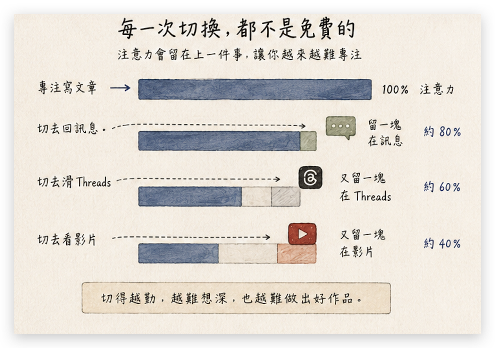
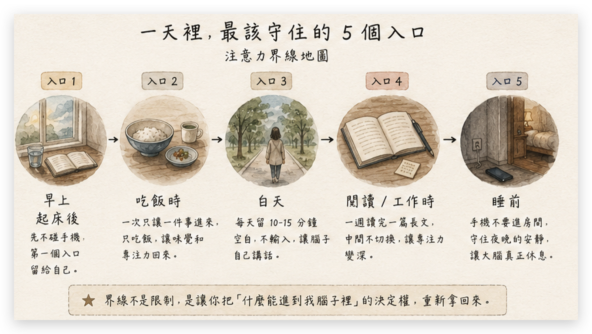

输入塞满一整天，自己的声音最先消失
原文小标题：你有这么多空档吗？

作者的比喻是：你的脑袋整天开着一扇门，太多别人的声音挤进来，把你自己的想法盖住了。她请读者算一算今天的输入，并指出每一项都有很好的理由：
- 播客是放松
- YouTube 是休息
- 文章是学习
- 刷手机只是打发空档
单独看都合理；加起来，从睁眼到睡着没有一段时间是安静的。
脑袋整天忙着接收，就腾不出空档，把那些输入慢慢变成你自己的。
所以最先消失的，是你自己的声音。
一静下来就发慌：被抬高的“正常值”
原文小标题：为什么你一静下来就发慌
“那我坐下来安静一下不就好了？”作者说试试就知道没那么简单。她让读者想象一个熟悉的周末：周六整天在家，早上手机配咖啡，中午外卖配剧集，下午甜点配 YouTube，晚上追剧追到两点。周日决定什么都不安排、好好休息，结果在沙发上坐不到十分钟就发慌，手机点开又放下，连最爱的那部剧都觉得一般。
她的解释是：前一天把大脑的“正常值”往上调了，神经科学把这个正常值叫作多巴胺基线。她转述斯坦福精神科医生 Anna Lembke 在《多巴胺国度》中的观点：每次强刺激之后，基线不会停在原地，而是先掉到比原来更低的地方，于是你得再抓一个刺激才能回到原本的感觉；抓久了，那条线就一路往上跑。

周六每半小时喂它一个高峰，等于一整天都在追那条往上跑的线；周日给它平常的分量，全都够不着，所以什么都淡。作者打了个比方：重口味吃久了，白饭尝起来像没味道——不是白饭变了，是舌头被垫高了。
安静、慢的念头，就是那口你尝不到的白饭。
所以接下来要做的，是把“什么能进你的脑袋”的决定权一条条拿回来。真正有用的是把环境和机制放到对的位置，让你不必整天靠意志力硬撑。下面 5 条界线，每一条都小到今天就能开始。
界线一：吃饭的时候只吃饭
原文小标题：1. 吃饭的时候，只吃饭
想给脑子清出一点空间，最小的起点就是吃饭只吃饭。明天午餐把手机收到看不见的地方，只吃这一顿。前五分钟你会浑身发痒、一直想抓点什么来配——作者说，那个痒就是基线在讨刺激，也是你第一次看清自己的脑子有多不习惯安静。
我们大概很久没有“纯吃饭”了：手机立在水杯旁、屏幕朝上，视频还没选好，第一口都还没吃。这看起来无害，却正是把基线往上垫的动作——吃饭加视频加消息，三个刺激叠成一组，大脑就把这个总量记成“一顿饭该有的量”；下次单纯吃饭，它就觉得无聊，因为少了另外两个。
同样的事会发生在所有小事上：单纯走一段路、单纯洗个碗、单纯读一页书。习惯了叠加，单线的事就全部变得太淡——你把每件小事都调成了三轨，单轨版本自然再也提不起劲。
那个痒不用对抗，看着它就好。原文给出的做法：手机放到看不见的地方，只吃这一顿；撑过去，饭会慢慢重新变得有味道。

界线二：每天留 15 到 30 分钟，什么都不输入
原文小标题：2. 每天留 15 到 30 分钟，什么都不输入
第二条更直接：每天留一小段时间，什么都不输入。可以走路、洗碗、坐着、买咖啡、发呆、整理房间，重点只有一个——先不要让另一个人的声音陪你。也就是先不听播客、不开 YouTube、不刷手机、不看文章，不往脑子里塞任何新东西。
这条界线会让你看清：平常很多输入其实只是逃离。观察自己一天会发现，拿起手机常常跟无聊无关——电梯里三十秒待不住，等水开的两分钟要刷一轮，工作卡住一下就马上切去整理笔记、回消息，或者查一个其实不急的东西。
那个瞬间，手机没有在娱乐你。它是逃生门。
卡住的感觉太难受，于是手比脑袋先做了决定。麻烦在于每逃一次，“不舒服就马上离开”这条路就走得更顺，下次卡住手更快。作者认为这和“读很多却长不出自己的想法”直接相关，因为自己的想法常常从不舒服的地方冒出来：
- 卡住
- 不太同意
- 觉得哪里怪怪的
- 读到某句话突然不舒服
- 想说什么，却还讲不清楚
可是一有那种感觉你就逃走了，还没来得及问自己：我到底不同意哪里？这跟我的生活有什么关系？为什么读到这句会不舒服？我真正想说的是什么？——下一个东西已经打开了。
所以每天留 15 到 30 分钟不输入，就是练习不逃离不舒服的情绪。前几天会很难受：一直想看过了多久，觉得自己无聊、烦、没效率。作者说这种难受更接近戒断，而不只是无聊。她建议给情绪起名字：
- “我现在焦躁。”
- “我现在想逃。”
- “我现在想找东西塞进来。”
情绪一被命名就不会糊成一团，你会看清：原来我不是真的需要手机，只是想离开这个感觉。然后，某件原本混乱的事会浮出比较清楚的轮廓，两个本不相干的主题忽然连上一条线——那是你原本就有的想法，终于有空浮上来。
界线三：手机不要睡在你旁边
原文小标题：3. 手机不要睡在你旁边
作者说这一条最简单也最有效，最先受益的不只是睡眠，还有思考。很多人靠视频和刷手机入睡，累到眼睛快睁不开还是一部接一部——因为真正安静下来时，白天没处理的焦虑会在晚上跑出来，白天不想面对的问题一关灯就变大声，伸手拿手机是想跳过那段安静。
她的观点是：白天读过的东西、遇到的人、卡住的问题不会立刻消失，而是在比较安静的时候被大脑慢慢整理。很多想法不是坐在书桌前用力想出来的，而是在停止接收之后，自己在脑子“后台”找到连接。如果睡前最后一小时全交给短视频、消息和算法，大脑就还在接收、没开始消化。
所以这条界线的做法是“搬家”：手机拿到房间外充电，门物理上关起来，剩下的就不用你半夜去守。睡前是一天里最累、决策力最低的时段，而最强的入口偏偏躺在枕头旁边。
你不用在凌晨一点跟算法比意志力。你会输，我也会输。
你要的是行为上的摩擦力——作者认为多走三步路，就能挡掉大半的深夜刷屏。具体可以这样做：
- 手机放到房间外充电
- 或者放到必须下床才拿得到的位置
- 睡前先把闹钟设好
- 真的需要声音，用没有屏幕的音箱
- 床边放一本纸质书，替代半夜想抓手机的动作
这条界线保护的是一天里最后一段没有外人进来的时间；空出来之后，很多原本被盖住的东西才有机会自己浮上来。

界线四：起床后先不碰手机，第一个时段留给自己
原文小标题：4. 起床后先不碰手机，把第一个时段留给自己
起床后先不碰手机，是为了让一天的第一个念头是自己的。作者说守一个礼拜就会发现，点子最多的时段正是这段还没被任何通知碰过的早晨——脑子最干净，想法最容易是你的。
早上的第一眼比你以为的贵。一睁眼点开消息，看到一条工作通知，就一条；接下来刷牙时在想怎么回，吃早餐时在预演下午的会，人还没出门，这一天已经在按别人的日程跑了。
她也强调早上没什么神圣的，不用点蜡烛写晨间日记；但它是一天里脑袋最干净、还没人进来过的一段，一睁眼就交出去，等于当天第一个念头就是别人的。她的建议：
- 把“起床后 90 分钟不碰手机”当作目标，而不是第一天就要拿到的分数。
- 守不住 90 分钟没关系，从撑得住的长度开始，10 分钟也算数，再慢慢往后推。
- 这段时间里喝水、洗脸、晒太阳、随手写一句今天脑子里最吵的事，都可以。
- 重点只有一个：今天第一个进门的是你，而不是别人的消息。
今天第一个进门的，是你，不是别人的消息。
界线五：每周完整读完一篇长文
原文小标题：5. 一周读完一篇长文
前四条都在挡，最后这一条相反：练习留下来，把别人的想法变成自己的判断。作者说一周读完一篇长文，真正的回报在几天后——排队、洗澡、走路时，那篇文章突然变成你自己的一句话冒出来。
读过的留在别人嘴里，读完的才长成你的。
她先问读者：上一次不切出去、从头到尾读完一篇长文是什么时候？想不起来很正常。专注力没有坏，而是被训练走了：一天被短内容切上百次，脑袋就学会每过一两分钟要找一个新刺激。这是耐力问题，而耐力练得回来。
而且每切走一次都不是免费的。她引用研究中的“注意力残留”：切出去回个消息，会有一块注意力卡在那件事上，切回来后还得花一段时间才接得回原来的轨道；切得越勤，一整天越是卡在半接不接的状态。

工作时也一样：真正的问题卡住了，能量就溜去做旁边简单的事，比如整理笔记、回几条不急的消息。每件事看起来都有用，所以你不觉得自己在逃，但真正的问题还在原地等你。
原文给出的做法：每周挑一次，一篇长文或一本书的一章，从头到尾读完。规则只有三条：
- 中间不切走，不开新标签页。
- 想查的东西，先写在旁边的纸上。
- 读完再查。
你存了那么多笔记，缺的从来只是这一段不被打断的时间。
作者也会破功：真正要拿回的是判断权
原文小标题：你的想法一直都在~
作者先说自己：这 5 条她全都在练，没有一条已经做到天天守住。

她最常破功的是睡前那条——手机有时候就是会赢。差别在于，她现在比较清楚发生了什么：刷到停不下来时，知道自己并没有整个烂掉，而是会观察自己：大脑在讨刺激吗？我是不是太累了？我是不是把最脆弱的时段交给了最容易上瘾的入口？
知道机制，你就不会把每一次破功都记在自己头上。
只要隔天重新把界线立回去就好。以前，通知、算法、别人的焦虑、别人的观点、别人的节奏都能直接进来，久了你会以为那就是你的脑子。
她的建议是：挑一条看完最有感觉的，今天就做。守住一条，你就会知道那段安静是什么样子，剩下的会容易很多。真正要拿回的是判断权——重新决定什么能进到脑子里、什么值得想、什么只是路过的噪音、什么是别人的结论。等到重新由你决定的那天，你会发现那个真正属于你的想法一直都在。
评论区摘录
所以断舍离中的“断”很重要。（作者回复：是的，想法上也要。）
学而不思欠拟合，思而不学过拟合。数字设备夺走了人们的思考能力，反而更容易欠拟合。（作者回复：对啊，需要空白的时间。）